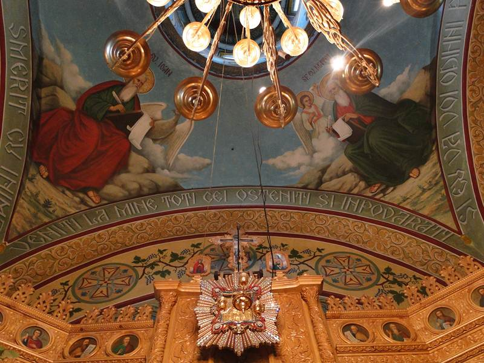

Părintele-egumen Macarie, în lume Marcu Tincu, s-a născut la 25 aprilie 1888 în satul Buciușca, raionul Rezina, într-o familie de oameni credincioși — tatăl Dimitrie și mama Ana.
Micul Marcu se deosebea de ceilalți copii de seama lui: era retras, iar în ochii lui puteai citi întotdeauna un sentiment de respect și adâncă plecăciune. [ paragraf — copilăria, din textul original ]
Chemarea
Când împlinește 12 ani, dorul de mănăstire năvălește afară și el îi roagă pe părinții lui să-l ducă încolo. Părinții au rămas mirați de alegerea făcută de copil. [ 2–3 paragrafe — intrarea în mănăstire ]

„Unde duhul dumnezeiesc își deschide porțile”
Nevoința
[ secțiune — anii de egumenie la Saharna, prigoana, mutarea la Domnul ]
Acatistul
Condacul 1. Alesule, de minuni făcătorule și prea minunate plăcutule al lui Hristos, grabnice ajutătorule și rugătorule al nostru, cuvioase părinte Macarie, mărind pe Domnul cel ce te-a preaslăvit pe tine, cele de laudă aducem ție.
Icosul 1. Îngerească viață alegând a petrece pe pământ, părinte, ca să te bucuri cu îngerii în ceruri, ai părăsit toate cele veselitoare ale lumii și, rănindu-te cu dumnezeiasca dragoste, ai alergat la limanul cel mântuitor.
Bucură-te, că din pruncie ai ridicat pe umeri crucea Mântuitorului Hristos; Bucură-te, că pentru dragostea lui Hristos ai uitat dorul părinților tăi; Bucură-te, că ai ales fecioria mai mult decât nunta.
[ Condacele 2–13 și Icosele 2–12 — text complet pe site-ul vechi, ~41 paragrafe ]